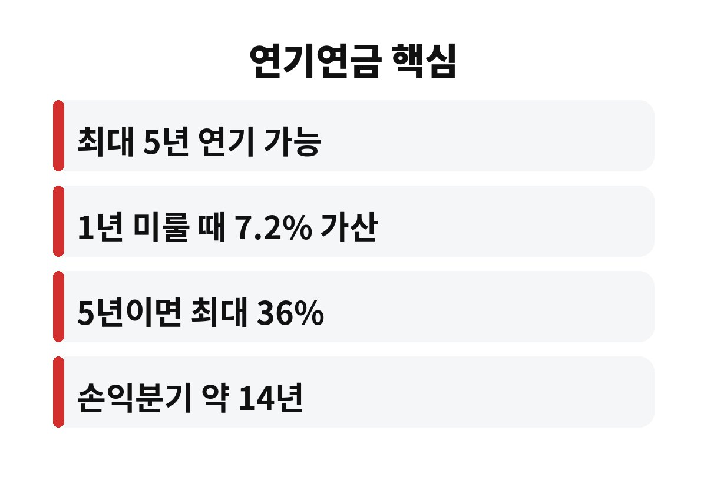
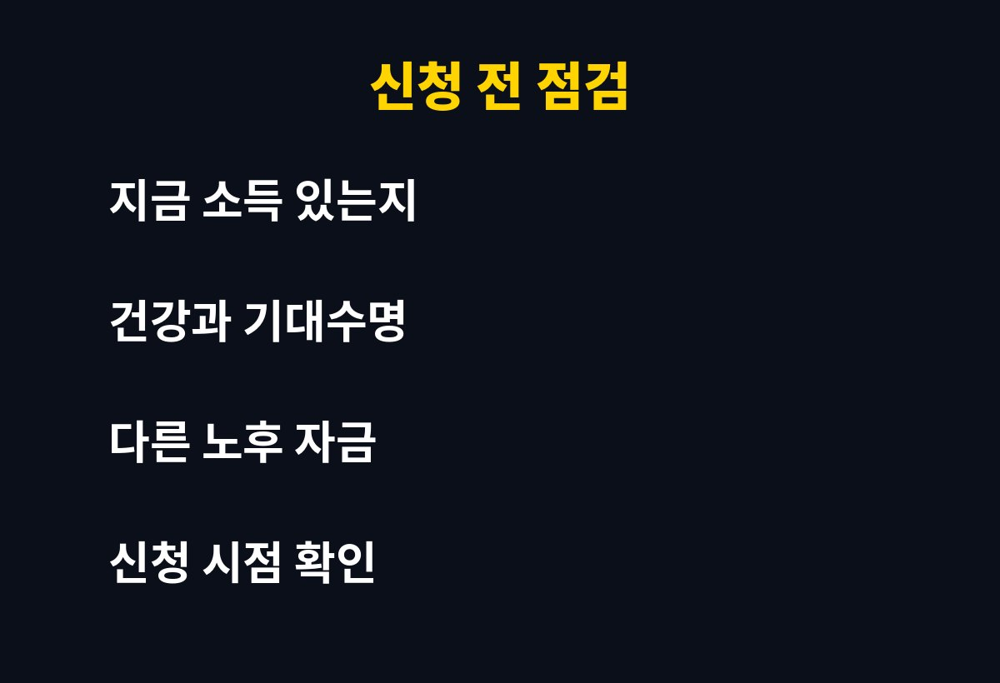

연기연금을 신청하면 국민연금 수령을 최대 5년 늦추는 대신 연금액이 최대 36%까지 늘어난다. 연금을 곧 받을 직장인이라면 지금 받는 게 이득인지 미루는 게 이득인지 궁금해질 수밖에 없다.
최근 보도에 따르면 국민연금 수급자 가운데 월 60만원 미만을 받는 사람이 66.0%에 이른다. 연기연금은 이 금액을 조금이라도 키울 수 있는 제도라서 관심이 커지고 있다. 연기연금의 구조부터 하나씩 짚어 본다.
연기연금은 노령연금을 받을 나이가 되었어도 신청을 미루는 제도이다. 최대 5년까지 늦출 수 있고, 한 달 늦출 때마다 연금액이 0.6%씩 늘어난다. 1년이면 7.2%이고 5년을 꽉 채우면 36%가 된다.
예를 들어 매달 60만원을 받을 수 있는 사람이 5년을 미루면 월 약 81만 6천원을 받게 된다. 한번 늘어난 금액은 평생 이어지고 물가 상승분도 매년 반영된다. 숫자만 보면 상당히 매력적이다.
가장 궁금한 부분이 바로 손익분기이다. 5년을 미루면 60개월 동안 연금을 받지 못한다. 그 대신 매달 36%를 더 받으므로, 받지 못한 60개월분을 메우는 데 약 167개월, 즉 14년 가까이 걸린다.
수령을 시작한 뒤 14년 넘게 산다면 미루는 쪽이 유리하고, 그 전에 세상을 떠나면 바로 받는 쪽이 유리하다. 평균 수명이 길어졌다는 점을 생각하면 건강한 사람에게는 미루는 선택이 나쁘지 않다. 다만 개인의 건강 상태와 가족력에 따라 판단이 달라진다.
여기서 많은 사람이 놓치는 점이 있다. 연금은 은행 이자처럼 원금이 불어나는 상품이 아니라, 오래 사는 위험에 대비하는 보험에 가깝다는 사실이다. 연기연금으로 늘어난 금액은 내가 몇 살까지 살든 끝까지 나온다. 은퇴 후 가장 무서운 일이 돈이 먼저 떨어지는 것이라면, 매달 받는 금액을 키워 두는 것은 그 불안을 줄이는 방법이 된다.

노령연금을 받으면서 일정 수준 이상의 근로소득이나 사업소득이 있으면 연금액이 깎일 수 있다. 이 감액은 소득이 많을수록 커진다. 아직 일을 하고 있고 소득이 높은 편이라면 연금을 미루는 것이 감액도 피하고 가산도 챙기는 방법이 된다.
반대로 소득이 없고 생활비가 빠듯하다면 사정이 다르다. 연금을 미루다가 생활비를 대출이나 적금 해지로 메우게 되면 오히려 손해가 날 수 있기 때문이다. 이 부분은 월 지출과 다른 노후 자금을 함께 따져 보아야 한다.
연기연금은 연금을 받기 시작하기 전에 신청해야 하고, 연기할 기간과 금액 일부만 미루는 방법도 선택할 수 있다. 전부를 미루기 부담스럽다면 일부만 미루는 방식으로 위험을 나눌 수 있다. 세부 조건은 국민연금공단 지사나 누리집에서 내 연금액으로 모의 계산을 해 보는 것이 가장 정확하다.
또 하나 생각할 부분은 부부의 연금이다. 부부가 각자 연금을 받는다면 한 사람은 먼저 받고 다른 한 사람은 미루는 식으로 나누는 전략도 쓸 수 있다. 생활비는 먼저 받는 쪽으로 해결하면서, 미룬 쪽의 연금액을 키워 두는 방식이다. 이렇게 하면 현금 흐름을 지키면서도 늘어난 연금의 장점을 함께 얻을 수 있다.
마지막으로 세금과 건강보험료도 따져 볼 필요가 있다. 연금 소득이 늘면 소득세와 건강보험료 부담도 함께 커질 수 있다. 가산된 연금액이 크면 클수록 이 부분이 실수령액에 미치는 영향도 커지므로, 세후 기준으로 비교해 보는 것이 현명하다. 숫자 하나만 보고 결정하기보다 내 상황 전체를 놓고 판단하는 것이 좋다.
실제로 연기연금을 고민하는 사람들이 가장 많이 하는 실수는 가산율만 보고 서둘러 결정하는 것이다. 36%라는 숫자는 분명 크지만, 그 36%를 받으려면 5년이라는 시간을 기다려야 한다. 그 사이에 건강이 나빠지거나 갑자기 큰 지출이 생기면 계획이 흔들릴 수 있다. 그래서 전문가들은 최소 몇 년치 생활비를 따로 확보해 둔 뒤에 연기를 결정하라고 조언하는 경우가 많다.
반대로 연금을 받자마자 쓰지 않고 따로 모아 투자하겠다는 계획도 현실에서는 쉽지 않다. 받은 돈을 꾸준히 굴려서 가산 효과보다 더 큰 수익을 내는 일은 생각보다 어렵기 때문이다. 결국 자신의 소비 습관과 투자 성향까지 솔직하게 돌아보는 것이 연기연금 결정의 출발점이다.

정리하면 연기연금은 건강하고 당장 생활비 걱정이 적은 사람에게 유리한 선택이다. 지금 받는 쪽과 미루는 쪽 중 어느 쪽이 내게 맞는지 한 번쯤 계산해 볼 만하다. 도움이 되었다면 구독으로 다음 글도 받아 보면 좋겠다.
본 글은 일반적인 정보 제공을 위한 것이며 투자 권유가 아니다.